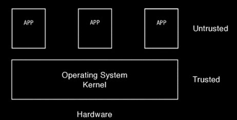
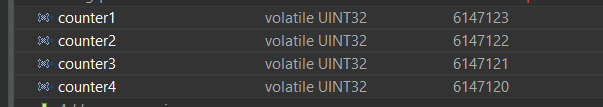
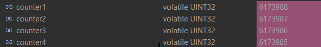

K0BA V0.3.0 Lite | Arch: ARMv7M | Repository | API | www.antoniogiacomelli.com
|
This document is an overall functional description. API details can be found in kapi.h |
K0BA - Functional Description
K0BA stands for Kernel '0' for Embedded Applications. It targets real-time constrained devices. The "zero" represents a low-overhead design based on "grounded" system software concepts.
K0BA Lite assumes no memory isolation is supported at all. The design embraces this limitation rather than working around it. Although the supported architecture allows privilege levels even when no MPU is provided, we chose not to leverage it.
Assuming no MPU, the scenario is that code that runs unprivileged cannot use privileged instructions, yet, unprivileged code can sweep the entire memory. In this case, privilegie levels would add the overhead of system calls and harm determinism, for a rather limited safety. We do not think it pays off.
"As modular as possible, rarely opaque."
K0BA does not aim to be an application framework.
The goal is to provide a balanced set of helpful services while never replacing the system’s programmer ownership - or getting on its way.

Figure 1. K0BA architecture - the dashed line within the API reminds the 'application' layer is an illusion
A layered depiction:
APPLICATION INTERFACE |
MESSAGE PASSING |
TASK SYNCHRONISATION |
APPLICATION TIMERS |
MEMORY MANAGEMENT |
LOW-LEVEL SCHEDULER |
CPU HAL |
“I conclude that there are two ways of constructing a software design: One way is to make it so simple that there are obviously no deficiencies and the other way is to make it so complicated that there are no obvious deficiencies. The first method is far more difficult (…) it requires a willingness to accept objectives which are limited by physical, logical, and technological constraints, and to accept a compromise when conflicting objectives cannot be met. (Tony Hoare, 1980, Turing Award Lecture)”
1. Operating systems and the 'Kernel' abstraction
The ISO/IEC 2382 standard defines an operating system as “software that controls the execution of programs and that may provide services such as resource allocation, scheduling, input/output control, and data management.”.
A deprecated German standard, the DIN 44300, defined an operating system as “the programs of a digital computer system that together with the properties of the computing system form the basis for the possible operating modes of the digital computing system, and which in particular control and monitor program execution.” Both definitions are pretty much the same, emphasising control and execution. The latter though, brings up the “properties of the computing system”. This reinforces that an operating system is hardware-dependent software. In turn, hardware is domain-dependent: a PC, a microwave, a fighter jet radar, a smart card…
Traditional operating system textbooks define an OS as a “resource manager and an extended machine”. As a manager, it orchestrates resource allocation to potentially conflicting application requests; as an extended machine, it makes it easier to design applications by providing a set of abstractions and mechanisms that abstract the hardware.
1.1. The grounds
Pir Brinch Hansen coined the kernel concept in 1969 when designing the RC4000 operating system. At the time, he used the terms system monitor or nucleus. He aimed to provide a reusable, extensible mechanism to construct other operating systems around the same software core for the same machine. In his work he describes the role of a kernel (nucleus) in an operating system:
“The system nucleus coordinates multiprogramming and communication processes - a monitor with complete control of input/output, store protection, and interrupt response. I do not regard the monitor as an independent process but rather as a software extension of the hardware structure that makes the computer more attractive for multiprogramming. Its function is to implement the process concept and the primitives that processes can call to create and control other processes and communicate with them. It is the only program which executes privileged instructions.”

The description provided by Hansen remains. The traditional definition of an operating system as a resource manager and extended machine overlaps with the definition of a kernel.
Mission: embedded
Formally, the “kernel” distinction can be made only if a hardware mechanism enables the separation of privileges for code and data. The takeaway is that when this hardware is absent, the kernel is a purely logical layer, and the operating system is a library-based or kernel-less operating system - and that’s what K0BA Lite is (and what most RTOSes for constrained devices you see around are).
With no memory virtualisation, and no affordable swapping, what is left is a single program image and a single resident process. We tweak it to create semi-independent (clueless) running units - threads - there is no isolation between a thread and another.
Even low-end MCUs might provide an MPU (K0BA has a version using it - the Minim’All version) - still - it is not virtualisation, as you see on multiprogramming kernels. They are memory firewalls - except that this firewall burns the house down when violated.
Real-time means system software needs to tick at the same pace of the changes in the environment we control. I understand this alone is enough to avoid indirection levels the most we can - that is, abstract just enough.
2. K0BA Scheduler
The K0BA scheduler is a priority-based, rate-monotonic scheduler.
The most remarkable characteristic is having O(1) time complexity This means that, no matter the number of tasks to choose from, the scheduler will always spend the same amount of (logical) time.
Below, I detail how it was achieved.
2.1. Data Structures
The backbone of the queues where tasks will wait for its turn to run is a circular doubly linked list: removing any item from a doubly list takes O(1) (provided we don’t need to search the item). As the kernel is aware of each task’s address, adding and removing is always O(1). Singly linked lists, can’t achieve O(1) for removal in any case.
One design choice that does not change the time complexity but does improve cyclomatic complexity is having a DUMMY reference, which anchors a list and eases the handling of 'edge cases'.
HEAD TAIL
_____ _____ _____ _____ _____
| |-->| |-->| |-->| |--> <--| |
|DUMMY| | H | | H+1 | | H+2 | . . . | T |
<-|_____|<--|_____|<--|_____|<--|_____| |_____|-->
|________________________________________________________|
- INITIALISE
The list is initialised by declaring a node, and assigning its previous
and next pointers to itself. This is the anchored reference.
_____
__|__ |
| |-->
|DUMMY|
<-|_____|
|____|
- INSERT AFTER
When list is empty we are inserting the head (that is also the tail).
If not empty:
To insert on the head, reference node is the dummy.
To insert on the tail, reference node is the current tail
(dummy's previous node).
_____ _____ _____
| ref |-> | new |-> | old |->
. .| | |next | | next| . . .
<-|_____| <-|_____| <-|_____|
- REMOVE A NODE
To remove a node we "cut off" its next and previous links, rearranging
as: node.prev.next = node.next; node.next.prev = node.prev;
_______________
_____ | _____ ___|_
| |-> | x | |->
. . .|prev | |node | | next| . . .
<-|_____| x_____| <-|_____|
|______________|
To remove the head, we remove the dummy's next node
To remove the tail, we remove the dummy's previous node
In both cases, the list adjusts itself
For list handling, I took an ADT approach prevalent on systems programming and based on aggregation. It is opaque. But, using offsetof() does not hinder determinism or incurs on runtime overhead - it is a compile-time calculation based on data layout. Generalising the handle of pure data with no penalties on performance while improving maintenance is an abstraction that suits.
|
Thus, comes another design choice towards achieving O(1). The global ready queue is a table of FIFO queues—each queue dedicated to a priority—and not a single ordered queue. So, enqueuing a ready task is always O(1). If tasks were placed on a single ready queue, the time complexity would be O(n), given the sorting needed.
READY QUEUE | Index (Priority)
----------------------------------------------
[ ][ ][ ][ ][ ][ ][ ][ ][ ] | 0 (highest effective)
[ ][ ][ ][ ][ ][ ][ ][ ][ ] | 1
. .
. .
. .
[ ][ ][ ][ ][ ][ ][ ][ ][ ] | N (s.t. N = lowest effective, user-assigned)
[ ] | N+1 (Reserved: IDLE TASK)So all this boils down to: enqueuing/dequeuing from any task queue on the system, global or associated with a kernel object, is always O(1). Now, it is up to the algorithm that picks the next task to run also to honor O(1).
2.2. The scheduling algorithm
It goes like this: as the READY QUEUE table is indexed by priority - the index 0 points to the queue of ready tasks with priority 0, and so forth, and there are 32 possible priorities - a 32-bit integer can represent the state of the ready queue table. It is a BITMAP:
The BITMAP computation: ((1a) OR (1b)) AND (2), s.t.:
(1a) Every Time a task is readied, update: BITMAP |= (1U << task->priority );
(1b) Every Time an empty READY QUEUE becomes non-empty, update: BITMAP |= (1U << queueIndex)
(2): Every Time READY QUEUE becomes empty, update: BITMAP &= ~(1U << queueIndex);EXAMPLE:
Ready Queue Index : (6)5 4 3 2 1 0
Not empty : 1 1 1 0 0 1 0
------------->
(LOW) Effective Priority (HIGH)In this case, the scenario is a system with 7 priority task levels. Queues with priorities 6, 5, 4, and 1 are not empty.
The idle task priority is assigned by the kernel, during initialisation taking into account all priorities the system programmer has defined. Unless user-tasks are occupying all 32 piorities, the Idle Task is treated as an ordinary lowest-priority and has a position in the queue. If not, the idle task on practice will have no queue position, and will be selected when the BITMAP is 0.
In the above bitmap, the idletask is in readyQueue[6] .
Given this mask, we know that we shall start inspecting on the LSBit and stop when the first 1 is found. There are uncountable manners of doing this. The approach I chose is:
(1) Isolate the rightmost '1':
RBITMAP = BITMAP & -BITMAP. (- is the bitwise operator for two's complement: ~BITMAP + 1) `In this case:
[31] [0] : Bit Position
0...1110010 : BITMAP
1...0001110 : -BITMAP
=============
0...0000010 : RBITMAP
[1]The rationale here is that, for a number N, its 2’s complement -N, flips all bits - except the rightmost '1' (by adding '1') . Then, N & -N results in a word with all 0-bits except for the less significant '1'.
(2) Extract rightmost '1' position:
Within GCC, the _builtin_ctz() function does the trick: it returns the number of _trailing 0-bits within an integer, starting from the LSbit. The number of 'trailing zeroes' equals the position where the first '1' is found, that is also the ready queue index (and hence the priority) of the next task to be dispatched.
Using ARMv7M instructions, a possible solution is to use the CLZ (count lead zeros):
.global __getReadyPrio
.type __getReadyPrio, %function
.thumb_func
__getReadyPrio:
CLZ R12, R0
MOV R0, R12
NEG R0, R0
ADD R0, #31
BX LRThus, we subtract 31 from the number of leading zeroes, and get the index.
The source code in K0BA looks like:
static inline PRIO kCalcNextTaskPrio_()
{
if (readyQBitMask == 0U)
{
return (idleTaskPrio);
}
readyQRightMask = readyQBitMask & -readyQBitMask;
PRIO prioVal = (PRIO) (__getReadyPrio(readyQRightMask));
return (prioVal);
// or GCC builtin (more portable)
//return (PRIO)(__builtin_ctz(readyQRightMask));
}
VOID kSchSwtch(VOID)
{
nextTaskPrio = calcNextTaskPrio_();
K_TCB* nextRunPtr = NULL;
K_ERR err = kTCBQDeq( &readyQueue[nextTaskPrio], &nextRunPtr);
if ((nextRunPtr == NULL) || (err != K_SUCCESS))
{
kErrHandler(FAULT_READYQ);
}
runPtr = nextRunPtr;
}3. Kernel Determinism
This is a simple test to establish some evidence the scheduler obeys the preemption criteria: a higher priority task always preempts a lower priority task.
Task1, 2, 3, 4 are in descending order of priority. If the scheduler is well-behaved, we shall see counters differing by "1".
volatile UINT32 counter1;
volatile UINT32 counter2;
volatile UINT32 counter3;
volatile UINT32 counter4;
VOID Task1(VOID)
{
while(1)
{
counter1++;
kPend();
}
}
VOID Task2(VOID)
{
while(1)
{
counter2++;
kSignal(1); /* shall immediately be preempted by task1 */
kPend(); /* suspends again */
}
}
VOID Task3(VOID)
{
while(1)
{
counter3++;
kSignal(2); /* shall immediately be preempted by task2 */
kPend(); /* suspends again */
}
}
VOID Task4(VOID)
{
while(1)
{
counter4++;
kSignal(3); /* shall immediately be preempted by task3 */
/* as the lowest priority task it will only be resumed
after all higher priority tasks are suspended */
}
}This is the output after some time running:

In this example, we are using direct signals. For semaphores, each task needs its own semaphore because each has a separate waiting queue.
K_SEMA sema1;
K_SEMA sema2;
K_SEMA sema3;
K_SEMA sema4;
volatile UINT32 counter1, counter2, counter3, counter4; /*dont code like this*/
VOID kApplicationInit(VOID)
{
kSemaInit(&sema1, 0);
kSemaInit(&sema2, 0);
kSemaInit(&sema3, 0);
kSemaInit(&sema4, 0);
counter1=counter2=counter3=counter4=0; /*dont code like this*/
}
VOID Task1(VOID)
{
while (1)
{
counter1++;
kSemaWait(&sema1);
}
}
VOID Task2(VOID)
{
while (1)
{
counter2++;
kSemaSignal(&sema1);
kSemaWait(&sema2);
}
}
VOID Task3(VOID)
{
while (1)
{
counter3++;
kSemaSignal(&sema2);
kSemaWait(&sema3);
}
}
VOID Task4(VOID)
{
while (1)
{
counter4++;
kSemaSignal(&sema3);
}
}Here tick is running @ 1ms (1KHz)

4. Application Timers
| Timer Control Block |
|---|
Mode: Reload/OneShot |
Callout Function |
Callout Arguments |
Delta Ticks |
Current Tick Count |
Next Timer Address |
K0BA offers two types of application timers - one-shot and auto-reload. Both have the system tick as the time reference and are countdown timers.
The system programmer needs to be aware that the callout will run within a deferred handler, that is a run-to-completion system-task.
One-shot timers that are within a task loop will naturally be activated periodically.
A specialised use-case of one-shot timers is the kSleep(ticks) primitive, that suspends a task for an amount of ticks. Task enters a SLEEPING state to be READY again when the timer reaches 0.
A remark is that timers leverage a delta queue. Suppose you have a set of timers T1, T2, T3. They will countdown from 8, 6 and 10 ticks, respectively. For a regular queue, the node sequence is RQ = <(T1, 8), (T2, 6), (T3, 10)> (at tick=0). The delta queue would have pairs ordered as a sequence (tick=0): DQ = <(T2, 6), (T1, 2), (T3, 2)>. So having to decrease only the list head for any amount of timers, yields O(1) time-complexity within the interrupt handler.
5. Memory Allocator
| Memory Allocator Control Block |
|---|
Associated Block Pool |
Number of Blocks |
Block Size |
Number of Free Blocks |
Free Block List |
Often we have fixed-size blocks statically allocated (a pool) and we might need to 'multiplex' its usage in time. A routine grabs a block (allocate it), use and put it back in the pool (free it). A simple approach would be a static table marking each block either as free or taken.
With this pattern you will need to 'search' for the next available block, if any - the time for searching changes.
For real-time, a suitable approach is to keep track of what is free using a linked list of addresses - a dynamic table. We use meta-data a list within the pool first: it is initialised so that every block holds the address of its next block. This approach limits that the minimal size of a block is the size of a memory address - 32-bit for our supported architecture.
When a routine calls alloc() the address to be returned is the one free list is pointing to, say addr1. Before, we update free list to point to the value stored within addr1, say addr8.
When a routine calls free(addr1), we overwrite whatever has been written in addr1 with the value freelist points to (if no more alloc() were issued, it still is addr8), and addr1 is the freelist head again.
Allocating a block always takes the same time and there is no fragmentation as we grab chunks of fixed-size.
A major hazard is having a routine writing to non-allocated memory within a pool, as it will spoil the meta-data.
6. Synchronisation services
6.1. Direct Task Signal
Some tasks are entirely reactive and have a single responsibility. It is cheaper and more effective to allow them to pend themselves - and be signalled
without an associated kernel object - such as a semaphore. The signal(id) primitive takes a Task ID as a parameter. The pend() primitive takes no parameters, acts on the caller task. If a task is signalled when not pending, the error counter "lostSignals" is
increased in its task control block. This counter is meant for some diagnostics. The standard mechanism does not check for lost signals - to catch up with. Doing so would turn it into in dedicated semaphore.
A PENDING task is placed on a global sleeping queue and removed when signalled—its position in the queue does not matter.
The main use case is for deferred handlers. The lack of a control block associated with a direct signal makes it rudimentary but sufficient, justified by the negligible cost and the ubiquity of single-purpose event-driven tasks sitting idle until notified: after readied, the scheduler will take care of its dispatching, respecting the priority. No shared resource, no contention, no priority inversion.
Direct signals cannot be disabled - no cost, no saving.
6.2. Semaphores
| Semaphore Control Block |
|---|
Signed Counter |
Acquirer Task |
Waiting Queue |
In K0BA semaphores can be classified as 'strong counter' semaphores. Counter means the primitives signal() and wait() will increase and
decrease, respectively, the initial signed value 'N' a semaphore is assigned (a semaphore cannot be initialised with a negative value).
When wait() results in a negative value, the caller will be blocked within the semaphore queue. The negative value of a counter semaphore inform us straight away how many tasks are blocked waiting for a signal. When signalled only one task is unblocked. If a semaphore has a dedicated queue it is 'strong', because it establishes an order. Not having a queue, make a 'weak' semaphore, as the task to be released depends on the position of the task who signals.
In K0BA, tasks block and resume within a semaphore-guarded region, ordered by their priority or on a FIFO discipline (that is configured in kconfig.h ).
Switching to a FIFO discipline might be useful if you notice low-priority tasks starving.
Semaphores implement a priority propagation protocol to diminish priority inversion.
On the one hand, we have the semaphores used for mutual exclusion, on the other hand, the private semaphores. Critical sections are used always, and only for the purpose of unambiguous inspection and modification of the state variables (allocated in the surrounding universe) that describe the current state of the system (as far as needed for the regulation of the harmonious cooperation between the various processes). (Djikstra, 1968, describing how semaphores were used in the "T.H.E" operating system)
6.3. Mutexes
| Mutex Control Block |
|---|
State: Locked/Unlocked |
Owner |
Waiting Queue |
Mutexes are 'locks'. A locked resource has an owner, and only the owner can release it—a task blocks when trying to lock a locked mutex. Mutexes have a priority propagation protocol. The owner’s priority is boosted if a higher priority task blocks trying to access (lock) its guarded region. When a task tries to unlock a mutex it does not own, the behaviour is implementation-dependent. In K0BA, it will hard fault.
Mutexes versus Semaphores
If you initialise a counter semaphore to 1, and guarantee that this semaphore won’t be touched by who is not trying to enter/exit its guarded region, the effect of mutual-exclusion is the same as if using a mutex. The mutex is a specialised semaphore, with a notion of ownership preventing accidental unlocking. The thing is that if your system has code poking kernel objects it shouldn’t - it has a logical synchronisation problem, and most certainly will fail. Some RTOSes with dynamic task creation can also use the owner identity to forbid a task that owns a mutex to be terminated or to identify its termination: the action if it happens, is implementation-defined. Recursive locking (when provided) is also only possible because a mutex has an owner.
Mutex service can be enabled/disabled.
6.4. Events
| Event Control Block |
|---|
Event ID (self-assigned) |
Sleeping Queue |
An event is a condition in time that will trigger a reaction: a countdown timer reaching zero, or the 7th bit of the 7th received stream on the 7th pin in the 7th fullmoon night in the 7th year of system uptime - being 0. These are 2 events. The reactions we don’t bother, it can even be 'to ignore the event'.
Within K0BA, an event is associated to a kernel object. The kernel assigns only an ID and a sleeping queue within an' event' object. Here, an event is a 'pure signal'—it is present or absent. A semaphore is a record of pure signals (and actually, that was the critical insight that led to the semaphore idea).
Say a modern car has its speed increased by the driver. Different groups of mechanisms need to be notified to take some action. The radio so that it might boost the volume. The windshield wiper control will increase its speed. The cruiser will switch off - as it might indicate a need for the driver to regain control, and I’d bet the cruiser switches off before the radio volume is boosted.
So, tasks sleep() forn an event. They rely on another task/ISR to trigger a wake(event) that will READY all tasks sleeping on that event at once. What happens later, is up to the scheduler and the application design.
As a single event might be of interest to several devices a semaphore is not suitable - a semaphore signal does not broadcast - it wakes one task for each signal - if any.
Sleep/Wake Events can be enabled/disabled.
6.5. Remarks on synch services
6.5.1. Apparent overlap
So, we have direct signals, semaphores, mutex and sleep-wake. And actually, they overlap in the sense they all handle events, but how they handle is enough to justify each of them as a different service:
-
The direct signals saved us the overhead of a semaphore structure and operations for a prevalent task pattern within embedded system software: the pend-does-one-thing-pend, such as interrupt service routines split in half-bottom and half-top.
-
The semaphore accumulates 'ups' and 'downs' of a signal - an increment/decrement + a test within an atomic operation. In enforces them a precedence on acquiring whatever the semaphore is guarding. If the semaphore counter is initialised as '1', effectively, it allows a single running unit to be within the region it is guarding.
-
The mutex provides the ownership property for a '1'-semaphore, making it easier to track errors.
-
The sleep-wake provides a broadcast signal for events we don’t bother to track its history.
6.5.2. Event flags and event groups
Sometimes we are interested in the combination of the absence/presence of several events on a given interval - so, we need a storage. RTOSes often provide a service for that: 'event flags' within 'event groups'. The subscribers sleep after a get() with the values they expect. The publisher set(). The broker reads, evaluates and wake() all interested readers.
As seen, it describes a public mailbox storing an integer (with flags). You will need more data structures, usually as simple as a table. But how the execution units handle this data - on our perspective - does not justify new abstractions. It means more code, bugs, maintenance, and another API the kernel designer makes clear—another the programmer needs to learn.
6.5.3. Installed callbacks for signals
It is tempting to become UNIX-minded and install callbacks on signals. When resuming, a task first checks for any pending signals. If they exist, the task deviates from its normal flow (as within any software interrupt), runs the callback, and deals with any side effects. The overhead is excessive—both in time and space—a need to reserve a space on the stack or provide a stack for the callback; a need to tune the context-switching to happen when there is a signal pending and to get back to the deviated point.
6.5.4. Time-out on blocking primitives
To be integrated while aligned with our guidelines.
7. Message Passing
What is the meaning of "message passing" when all memory is shared memory? I ask that because traditionally they oppose. Message Passing is a system call asking the kernel to copy data from a region user tasks are not allowed to access. Shared Memory is a public memory region, in which user processes can direct write to and read from - the details are implementation-dependent. It is faster, and need to be managed as any shared resource.
Yet, on embedded we work hard to enqueue pointers. How is that? Pointer-as-message is a formalised handshake for accessing shared memory in an already shared memory system. Sounds like application-dependent. It is reasonable doing so when copying will create a contention the application cannot afford.
Any mechanism allowing that end up on leaving the message scope to be managed by the user task - what is not only anti-modular; it deviates from K0BA guideline for what can be a service.
That said, as on VER0.3.0 message passing within K0BA is orthodox: messages are passed by copy.
7.1. Mailboxes
| Mailbox Control Block |
|---|
Storage address |
Mail size |
Mailbox status |
Waiting queue |
Owner task |
Mailboxes are kernel objects ruled by the absence or presence of a message. A mailbox holds a single message unit - the size is application-defined.
Blocking mailboxes
Blocking mailboxes can be regarded as synchronous - a consumer blocks on an empty box until a message arrives, likewise a producer blocks on a full box waiting the current message to be consumed before depositing another.
A synchronous mailbox interface contract can be defined as follows:
-
A mailbox starts EMPTY, with non-null storage address where a fixed-size message will be deposited and retrieved. Both message size and storage address remains constant.
-
A mailbox will always have an assigned 'owner' after the first
send()orrecv()primitive. The owner is the task who succeded gaining access to the box. -
A
send()primitive takes a mailbox address, a source message address. The message is copyied from the source to the box storage. -
A
recv()primitive receives a mailbox address and destination address. The message is copyied from the box storage to the destination address. -
When a producer
send()to an EMPTY mailbox, it is the owner. After depositing the message, mailbox is FULL. -
When a consumer
recv()from a FULL mailbox, it is the owner. After extracting the message, mailbox is EMPTY. -
When a producer
send()to a FULL mailbox, it blocks, is enqueued on the mailbox waiting queue, and its task will now be on stateSENDING. -
Likewise, a consumer blocks when issuing a
recv()on an empty mailbox. Task status switches toRECEIVINGand it is enqueued on the mailbox waiting queue. -
A mailbox implements a priority propagation protocol, boosting the owner priority on the occasion a higher priority task blocks.
-
The waiting queue for a mailbox, has an enqueing discipline that can either be priority or FIFO. Default is by priority, to be coherent with the scheduler.
-
Blocking
send()orrecv()cannot be used within ISRs.
You need to be aware of how the priority of tasks and mailbox queue discipline impact the message exchange. Say you have a bad idea: two producers and a consumer with priorities High, Medium and Low, respectively. Producers send() and consumer recv() - no other blocking conditions. If the queue discipline for the mailbox is ordered by priority, the medium priority producer will block once and deadlock - since when the consumer empties the box, who is released is the higher priority - always. If it is a FIFO, it will receive the two messages serially; wonder you are choosing to delay a higher priority task.)
Named Mailboxes (direct channel)
By default a mailbox is a public object, so any task can send or receive to one. You can choose to name a mailbox channel so only one task can receive from it. To do so, after initialising a mailbox use the primitive mboxname() passing the mailbox object and the task ID that will own the channel.
From now on, only this task will be allowed to recv() from this mailbox - and it will not be allowed to send(). This is particularly useful for client-server designs - when they fit.
Aynchronous methods
An alternative usage for the same mailboxes are the primitives asend() and arecv(). Instead of blocking they will return an error. These are suitable for ISRs or when you want an asynchronous communication between tasks.
There two other asynchronous methods: asendovw() - to deposit a message on a mailbox even if it is FULL,
and arecvkeep() - to retrieve a message from a mailbox but the box will not switch to EMPTY - so other receivers can grab the same message.
You can use a mboxquery() method to check on the status of a mailbox before send() or recv() if not willing to block.
7.2. Message Queues
7.2.1. Indirect Blocking Message Queue
This type of message queue can be depicted as a circular buffer with a mailbox on the head and another on the tail - initially head and tail are the same, so the circular buffer is empty. As buffering need increases, tail moves away from head. Data is extracted, head moves towards tail (or vice-versa). When both boxes have (unread) data, it means our buffering capacity is over.
Thus, it will behave asynchronously until a receiver try to read from an empty queue and (optionally) when a producer tries to write on a full queue. This behaviour might be desirable or not. The result, anyway, is that tasks with different periods end up synchronising to the lowest rate task - (usually, undesirable for real-time). After a queue blocks full, when it eventually unblocks you might had lost data. Is it the problem? Yes and no.
The problem with a queue is that by buffering you are reading from the past. Between a message that does not arrive, and one that arrives with information that is not useful, there is no practical difference. But if a message arrives with information that will deceive your control loop to perform a wrong action - this is the worse. That can be avoided if your send-receive pair follows an unidirectional order, and handle predictable timing events (loosely, periodic events). Finally, the queue size must be adequate (look at Little’s theorem). So, except for logging/monitoring or serialize access, queues might cause trouble when a system takes action with the information it is reading.
The message queue service works with an allocator. You initialise a queue by providing the size of the item, and the number of items - the product of both is the queue capacity. Besides you pass the pool where the allocator will arrange the buffering. Using the allocator implicitly, allows the kernel to provide the ability for the user to vary message size up to a maximum, since the position of the queue is guided by the buffer address, and not attached to a write/read position.
Receiving from an empty queue is always blocking. Sending is optionally blocking and configured on kconfig.h. As on VER0.3.0 Message Queue service depends on semaphores, and thus, the enqueing discipline for blocking tasks, is the same as those you’ve configured for semaphores (priority or FIFO).
|
The Indirect Blocking Message Queue in VER0.3.0 is classified as BLOATED and will undergo major refactoring. This is the second major failure under the K0BA Design Committee, following USELESS. |
7.3. Indirect Asynch "Pump-Drop" Message Queue
Pump-Drop Queues are meant to overcome the drawbacks exposed above for message queues, based on the concept of Cyclical Asynchronous Buffers (CAB) (essentialy as found in the HARTIK kernel). These queues are a one-to-many mechanism. A buffer can be read by several consumers, but no buffer can be written while consumed. The ideal queue size is the number of readers + 1.
The semantics is as follows:
-
When the producer needs to write a new message to the queue, first it reserves a buffer. With a valid address, it attaches to the buffer the mesage address and size, and 'pump' it to the queue. Now, this message is available to be read by several consumers - until it is overwritten.
-
The last message pumped in a queue is not overwritten UNTIL a new buffer is pumped and finds its number of clients is zero (all readers dropped)
-
A reader first 'fetches' a message buffer address - what will increase the user count within a buffer. After consuming the message, the reader 'drop the buffer'.
By the exposure, you can conclude that a reader might miss messages when the writer’s rate is higher. A reader within a (servo-loop) controller can afford a 'miss' rate— what leads to failure is reading messages that do not represent the plant state.
Pump-drop queues are optional and can be turned ON/OFF in kconfig.h.
In UNIX a broken pipe is a pipe with writers but no readers. A pipe with readers but no writers is not 'broken'. It reinforces the idea that there is not such a thing as valid never-received data.
7.4. Pipes
Formally pipes are not message passing, because data is transmitted as 'raw' bytes. Pipes transmit streams of bytes - unlike queues or mailboxes that transmit 'objects' with a format. They are fast because data does not move, what moves is the read/write pointer within the pipe buffer. A writer stops its operation when the N specified bytes have been written, or there is no more room. In the last case it goes to sleep until a reader wakes it up after 'extracting' from the pipe.
A reader reads until N specified bytes were read or when there is no more data. In the last case it will sleep, to be waken by a writer.
Both one-to-many and many-to-one channels are possible - those who wake need to themselves ensure precedence.
A handy use of these pipe is combining two for double buffering.
Pipes are optional and can be turned ON/OFF in kconfig.h.
As on V0.3.0, they depend on sleep-wake mechanism.
You cannot usem them within ISRs, in no occasion.